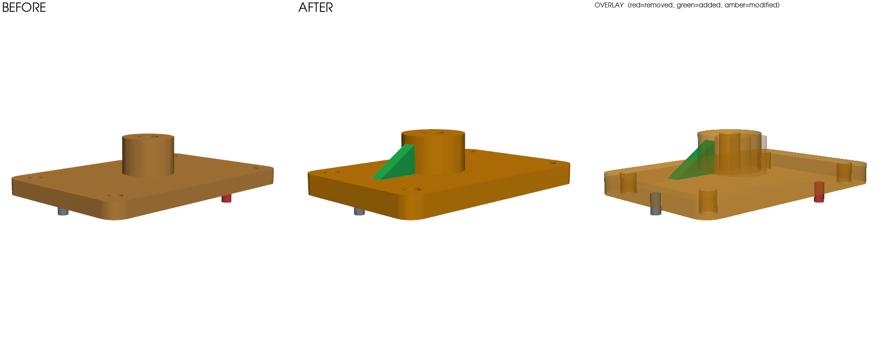
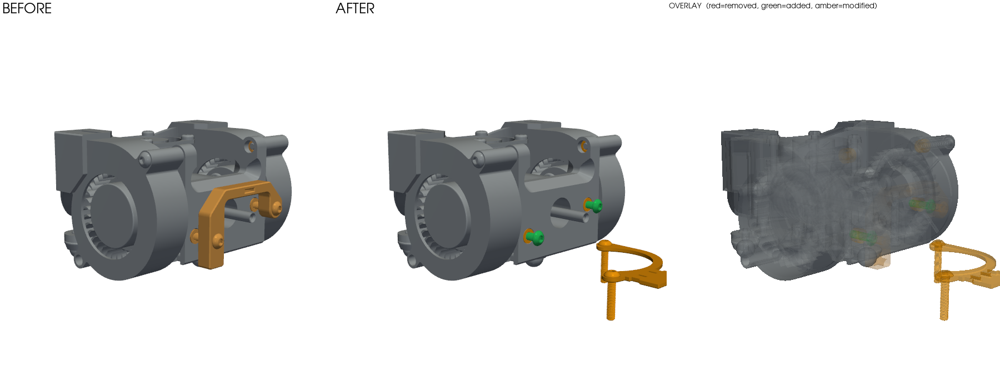

When a STEP or STL file changes, a screenshot in Slack is not a review. Argus shows what actually changed — bodies added, removed, modified; mass and volume deltas; bounding envelope; solid interference — as structured data, a rendered visual diff, and pass/fail CI gates. STEP, STL, 3MF, OBJ, PLY.

Real output: a bracket between two revisions. green = added, red = removed, amber = modified, gray = unchanged. The overlay ghosts the old geometry in place.
$ argus diff bracket_rev_a.step bracket_rev_b.step --density 2.70 + 1 added - 1 removed ~ 2 modified = 1 unchanged volume: 35638.9 -> 48318.3 mm^3 (+35.58%) mass: 96.23 -> 130.46 g @ 2.7 g/cm^3 (+34.23 g) interferences (after): 1 ~ body_0: vol +32.46%, com shift 1.000 mm . 4x cylinder face: radius 2.500 -> 3.000 mm ← the corner holes opened ⌀5→⌀6 ~ body_1: vol +52.38%, com shift 6.325 mm . cylinder face: radius 10.000 -> 12.000 mm ← the boss grew ⌀20→⌀24 + body_2: 540.0 mm^3 - body_2: 100.5 mm^3 ! interference body_1 x body_2: 108.650 mm^3 overlap
AI agents and parametric tools now produce mechanical designs faster than humans can check them. Verification — not generation — is the bottleneck. ECAD got its diff-and-review wave; mechanical CAD, the larger population, still reviews by opening two files side by side and squinting.
Two STEP files in; JSON + terminal summary + rendered before/after/overlay out. Body matching by geometric fingerprint on the open OCCT kernel. MIT licensed.
--fail-on-interference, --max-mass-delta-pct. Exit codes a pipeline understands. A mass budget can fail a PR the way a broken test does.
The visual diff and the gate results, commented directly on pull requests that touch CAD files. See it on a real PR.
Private repos, large assemblies, inline 3D viewer, team seats, history. Free for open source, always.
In 2021, the open-source Jubilee toolchanger project updated a 70 MB STEP export with the commit message "updating STEP Files to be in sync with Solidworks files" — the only description the tooling of the day could give. Argus resolves that commit to: 58 of 65 bodies untouched, four fasteners shifted exactly 0.385 mm, two parts repositioned, one part redesigned (−61% volume), two parts added. In 3 minutes 18 seconds, reproducible from a committed script.

Real output on the real files: the Orbiter extruder tool, revision 9c8f1d4^ vs 9c8f1d4. The amber bracket was redesigned and repositioned; green fasteners were added; gray is untouched.
The code is live: github.com/mikelmyers/argus-diff (MIT). The GitHub Action is live too. Leave an email for cloud-tier updates and launch news, and nothing else. No spam; one-click out.
You're on the list. We'll email you Argus launch updates only.
That didn't send. Email the operator instead: myers092@gmail.com
We store your email to send Argus launch updates only. It is never sold or shared. Reply "stop" to any mail to be removed.